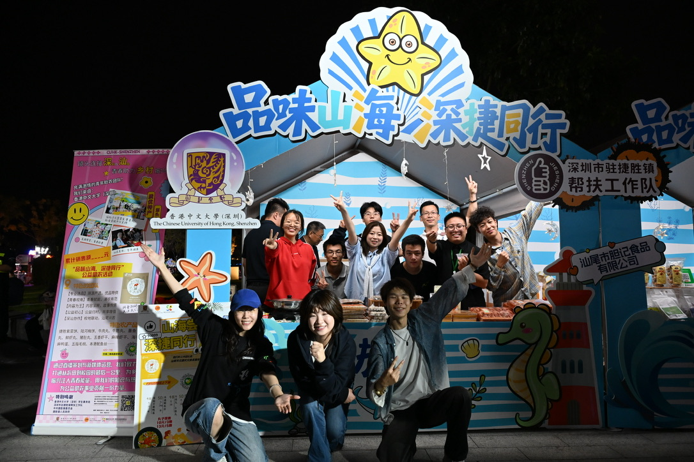

AI for Networking
Learning-based network measurement, congestion classification, and adaptive transport protocols.
Undergraduate Researcher · CUHK-Shenzhen & CUHK
I am interested in building intelligent systems that connect machine learning, networks, and control with meaningful real-world applications.
Double major in Electronic and Computer Engineering and Artificial Intelligence: Systems and Engineering. Currently exploring learning-based congestion control, industrial APC, and multimodal assistive technology.
Open to research conversations
01 / Research
My work sits at the intersection of learning, systems, and human needs. I am especially interested in methods that remain useful outside controlled settings.
Learning-based network measurement, congestion classification, and adaptive transport protocols.
Data-driven modeling, operating-condition recognition, and adaptive control for industrial systems.
Human-centered systems that combine speech, emotion, and visual understanding in real time.
02 / Selected Projects
Three current projects spanning networking, multimodal AI, and industrial control.
CRIS Project
Exploring congestion classification and adaptive BBR behavior through simulation and performance evaluation across varied bandwidth, delay, and packet-loss conditions.
Innovation Competition
Building a real-time prototype that integrates speech recognition, emotion analysis, and facial-expression recognition to generate context-aware social cues.
TIDE Club · Nanjing Kaosi
Contributing to process-data analysis, closed-loop modeling, operating-condition recognition, and adaptive control for steel reheating-furnace optimization.
03 / Background
2+2 Programme · Double Major in ECE and Artificial Intelligence: Systems and Engineering
Supporting society operations, programme coordination, and member engagement.
Volunteer teacher at Shiyang Primary School in Zhanjiang; contributor to OSA rural agricultural assistance through local-product promotion and community engagement.
Explored aerospace, planetary science, satellite systems, and earth-information applications.

04 / Contact
I welcome conversations about research, collaboration, and learning opportunities.